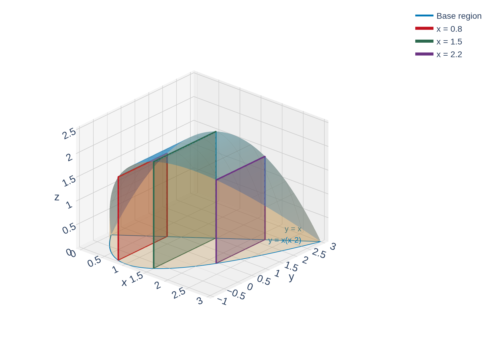
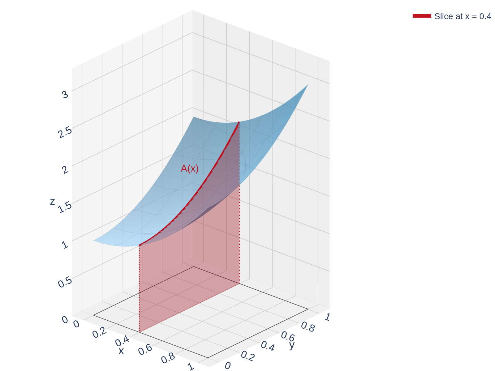
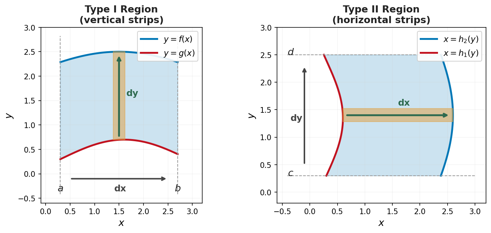
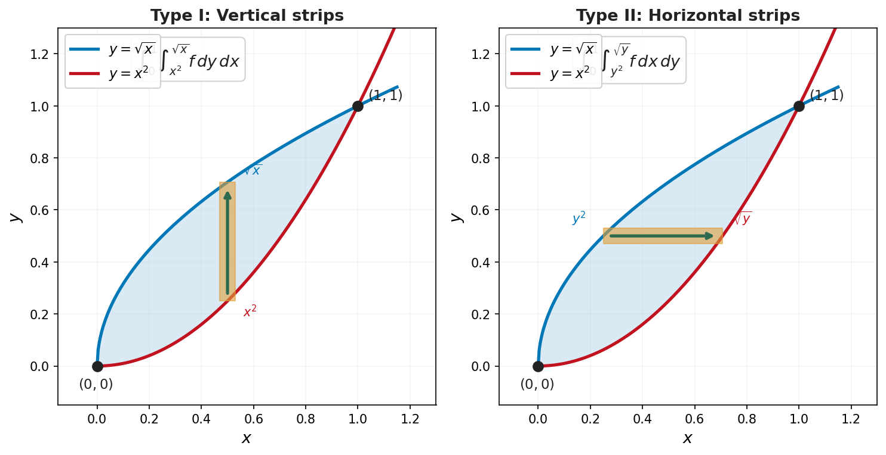

Section 15.2: Iterated Integrals and Double Integrals over General Regions
Multiple Integrals
MTH 310
Calculus III
From Cross-Sections to Iterated Integrals
Example 1
A solid \(S\) has its base in the \(xy\)-plane, bounded by \(f(x) = x(x-2)\) and \(g(x) = x\). Cross-sections perpendicular to the \(x\)-axis are squares. Find the volume.

The Cross-Section Idea for Surfaces

Example: Volume Under \(f(x,y) = 1 + x^2 + y^2\)
Example 2
Find the volume under \(f(x,y) = 1 + x^2 + y^2\) above the unit square \(R = [0,1] \times [0,1]\).
Fubini's Theorem
Theorem: Fubini's Theorem
If \(f\) is continuous on the rectangle \(R = [a,b] \times [c,d]\), then
\[\iint_R f(x,y)\,dA = \int_a^b \int_c^d f(x,y)\,dy\,dx = \int_c^d \int_a^b f(x,y)\,dx\,dy\]
Both orders of integration give the same answer.
Quick Check: Set Up an Iterated Integral
Example: A Trig Integral
Example 3
Evaluate \(\displaystyle\iint_R \cos(x + 2y)\,dA\), where \(R = [0, \pi] \times [0, \pi/2]\).
Beyond Rectangles: General Regions
Type 1 and Type 2 Regions
Type 1 Region (Integrate $dy\,dx$)
A region \(D\) is Type 1 if it lies between two curves \(y = g_1(x)\) and \(y = g_2(x)\):
\[D = \{(x,y) \mid a \leq x \leq b, \;\; g_1(x) \leq y \leq g_2(x)\}\]
\[\iint_D f(x,y)\,dA = \int_a^b \int_{g_1(x)}^{g_2(x)} f(x,y)\,dy\,dx\]
Type 2 Region (Integrate $dx\,dy$)
A region \(D\) is Type 2 if it lies between two curves \(x = h_1(y)\) and \(x = h_2(y)\):
\[D = \{(x,y) \mid c \leq y \leq d, \;\; h_1(y) \leq x \leq h_2(y)\}\]
\[\iint_D f(x,y)\,dA = \int_c^d \int_{h_1(y)}^{h_2(y)} f(x,y)\,dx\,dy\]

Quick Check: Identify the Limits
Example: Integral over a Triangular Region
Example 4
Evaluate \(\displaystyle\iint_D x\sqrt{y^2 - x^2}\,dA\), where \(D = \{(x,y) \mid 0 \leq y \leq 1,\; 0 \leq x \leq y\}\).
Describing a Region Both Ways
Example 5
Consider the region \(D\) between \(y = x^2\) and \(y = \sqrt{x}\).
(a) Describe \(D\) as both a Type 1 and a Type 2 region.
(b) Evaluate \(\displaystyle\iint_D (2x - 3y^2)\,dA\).
